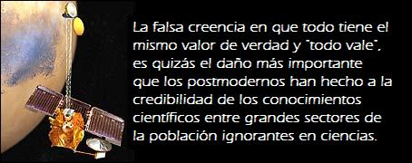

La pregunta de la mesa redonda puede contestarse con un sí y con un no, lo que no es buen síntoma desde el punto de vista de la lógica, aunque lo sea desde otras perspectivas. Para responderla, quizás antes debamos hacer otras preguntas: ¿Cómo entendemos la palabra cultura? ¿Se entiende por cultura sólo el conjunto de cosas las bellas artes principalmente que caen dentro de las competencias de ministerios, consejerías, departamentos y concejalías que llevan la etiqueta de cultura? ¿O se entiende por cultura, como hacen las ciencias sociales, el conjunto de herramientas de adaptación de grupos y sociedades humanas basadas en el lenguaje y la comunicación, lo que incluye no sólo conocimientos, valores y creencias, sino también artefactos, recetas y utensilios? ¿Y qué entendemos con la palabra ciencia? ¿entendemos por ciencia el conjunto de actividades destinadas a obtener conocimiento certero y certificado sobre la realidad, usando métodos replicables y contrastables para probar sus afirmaciones, que empiezan a desarrollarse en el siglo XVII en Europa y van creciendo paulatinamente en los siglos XVIII el siglo de las luces o Ilustración y XIX, para explosionar de forma notable a partir de la segunda mitad del siglo XX, en las numerosas actividades y conocimientos que conocemos como ciencias y tecnologías? ¿o la entendemos, de forma más general, como una búsqueda racional de la verdad basada en la experiencia, lo que permite hablar de diversas clases de ciencias (como las ciencias sociales, la ciencia jurídica o la ciencia de la religión) y de etnociencias?
Según como las entendamos, podemos contestar sí o no a la pregunta de la mesa. Podríamos decir que sí hay cultura sin ciencia porque la ciencia misma es producto de la cultura, de una cultura determinada en una época histórica determinada, por lo que durante milenios las culturas humanas funcionaron sin ciencia e incluso hay amplios sectores de la cultura (o subculturas) de nuestras sociedades modernas que funcionan sin referentes científicos. Pero también podemos decir que no hay cultura sin ciencia en la sociedad mundializada del siglo XXI, aunque la ciencia esté ausente de los ministerios y consejerias de cultura y aún se considere que los intelectuales son exclusivamente los de “letras” o “humanidades”. Hoy, en una sociedad que se autocalifica de sociedad del conocimiento, las ciencias y las tecnologías son las protagonistas principales del cambio social, de múltiples cambios sociales. Sin embargo, en los medios de comunicación y en el sistema educativo se sigue excluyendo a los científicos de las cuestiones relacionadas con la ‘alta’ cultura o de las cuestiones importantes de la vida humana y la filosofía.
Como se ha señalado tantas veces, muchos intelectuales siguen presumiendo de no saber matemáticas o de ser ignorantes en cuestiones de ciencia, sin que por ello se dude de que sean cultos o educados. ¿Pueden seguir los intelectuales humanísticos siendo ajenos a las ciencias e ignorantes respecto a las implicaciones de los conocimientos científicos sobre el universo, sobre la vida y sobre la naturaleza humana? ¿Se puede seguir siendo culto sin saber ciencias? El Romanticismo, la filosofía fenomenológica y existencialista y el rechazo a los métodos científiconaturales por parte de sectores importantes de los científicos sociales a principios del siglo XX, y de la filosofía y las ciencias sociales postmodernas a finales de ese siglo, han contribuido a esta situación problemática de las relaciones de la ciencia, de las ciencias más bien, con la cultura.
El Romanticismo del siglo XIX fue una reacción a la Ilustración, a la sociedad industrial y al creciente prestigio de los conocimientos científicos. Las ciencias parecían monopolizar el campo mismo de la verdad, de tal modo que la verdad era la verdad científica o probada con métodos científicos. Los románticos consideraban que la Ilustración, con su énfasis en la Razón y en las capacidades racionales, habían dejado de lado los sentimientos y las cosas importantes de la vida, y que la ciencia no tiene respuesta para las grandes preguntas sobre el sentido de la vida: ¿quienes somos?, ¿de donde venimos? y ¿adonde vamos?.
El debate sobre el positivismo en la llamadas ‘ciencias del espíritu’ en Alemania es parte de esa reacción. El ‘positivismo’ suele entenderse como la defensa de las tesis de Auguste Comte, creador del término sociología y uno de los “padres fundadores” de esta ciencia social. Comte, identificando la historia intelectual de Francia con la de la Humanidad (así con mayúsculas), afirmaba que la evolución de la humanidad se medía en términos de conocimiento; que a un conocimiento religioso primario o etapa teológica, le sigue un conocimiento filosófico crítico que niega la etapa anterior y sustituye a los dioses por abstracciones, que es la etapa metafísica, que a su vez se verá superada por el conocimiento científico, la etapa positiva, en la que se producirá conocimiento cierto y probado sobre el mundo. Este conocimiento será la base de una nueva forma de sociedad científicamente organizada. Para Comte, el único conocimiento fiable y cierto era el aportado por las ciencias y que él llamaba positivo para recalcar su diferencia con la etapa anterior, que negaba y criticaba, mientras que el conocimiento científico afirma y prueba. Comte no pudo superar la deriva religiosa (tan común a los proyectos políticos de reforma o cambio social, especialmente los que implican un alto coste de sufrimientos y violencia) y acabó proponiendo una absurda religión positiva calcada del catolicismo.
De ahí que los positivistas sean los defensores de métodos científicos de obtención de conocimiento. Especialmente los que tratan de aplicar métodos científicos en las ciencias sociales. En éstas, el debate se salda con el establecimiento de la tesis del doble método científico: los métodos explicativos para el mundo natural y los métodos comprensivos o hermenéuticos para el mundo social. Este debate sigue abierto y mientras que las humanidades y las ciencias naturales han seguido sus actividades de forma separada, unas ajenas a las otras, las ciencias sociales no han logrado aún convencer de su eficacia para aplicar los métodos de la ciencia natural a los asuntos de los que hasta entonces se habían ocupado las humanidades. Pese a ello, las ciencias sociales elaboran conocimientos sistemáticos sobre las modernas sociedades complejas y su éxito mundano es incontestable. Gracias a la aplicación de métodos rigurosos a los fenómenos sociales, hoy sabemos mucho más sobre las causas de la pobreza, sobre los efectos de las políticas educativas, sobre las desigualdades sociales, sobre las nuevas formas familiares, sobre el comportamiento de los poderes públicos y los partidos políticos, sobre las creencias religiosas de la población y sobre muchísimas otras cosas más.
Del romanticismo y del rechazo al positivismo surge la idea de que los filósofos, literatos, historiadores y artistas de todo tipo son los intelectuales, los ‘hombres de letras’ y se deja a las ciencias fuera de la intelectualidad y de la cultura. Edmundo Husserl es el filósofo más importante de esta tendencia y sus ideas ejercerán una profunda influencia en la cultura europea, especialmente a través del existencialismo, tanto en su variante de izquierdas con Sartre, como de derechas con Heiddegger.
Ello da lugar a la situación que detectó en 1959 Snow, en su ensayo sobre “Las dos culturas”: la profunda escisión entre las ciencias y las letras y el desprecio por la ciencia que sienten los “hombres de letras”, sean filósofos, literatos o escritores, periodistas, poetas o ensayistas. Esta escisión se retroalimenta y se reproduce sistemáticamente en el sistema educativo, que permite trayectorias curriculares en las que no aparecen contenidos científicos y que produce importantes contigentes de población ignorante respecto a la ciencia.
El aumento de los conocimientos científicos en diversos campos está permitiendo a las ciencias dar respuestas a preguntas a las que tradicionalmente respondían literatos, teólogos y filósofos: quiénes somos, de donde venimos y adonde vamos. Están también respondiendo a los clásicos temas románticos de los sentimientos y la razón, el cuerpo y el alma, la vida y la muerte. El éxito de obras de divulgación literaria de los conocimientos científicos muestra que hay un público que demanda nuevas explicaciones de la naturaleza, del universo y de la especie humana que estén soportadas por avales científicos, que sean objetivas y estén probadas. El abismo o cisma entre las ciencias y las letras no se ha salvado mediante una síntesis entre ambas. Más bien, algunos científicos están empezando a trasladar sus conocimientos a los temas tradicionales de las humanidades.
Este es el caso del movimiento conocido como la Tercera Cultura, compuesto por científicos y pensadores que a través de sus escritos están reemplazando a los intelectuales tradicionales en dar explicaciones para las grandes preguntas filosóficas sobre el origen del universo, sobre la naturaleza humana o sobre el origen de la vida. John Brockman, su fundador, afirma que la Tercera Cultura está redefiniendo quiénes y qué somos (Third Culture: Beyond the Scientific Revolution).
La filosofía, las ciencias sociales y las humanidades postmodernas han ido cuestionando y erosionando la credibilidad y el prestigio de las ciencias. Por una parte, relativizando sus conocimientos, al considerarlos como construcciones sociales como discursos o narrativas en pie de igualdad respecto a otras alternativas cognoscitivas como las religiones o las ideologías. Por otra, cuestionando seriamente sus fundamentos epistemológicos y su objetividad.
A esta situación ha contribuido el importante papel de las ciencias y las tecnologías en las sociedades actuales, que son dependientes de los conocimientos científicotécnicos para la supervivencia, y el auge de las industrias del conocimiento, la explotación comercial de los conocimientos científicos, la necesidad de disponer de conocimientos para la toma de decisiones políticas, etc.
Para los críticos del orden social, las ciencias y las tecnologías forman parte indisoluble y culpable del sistema de reparto desigual de la riqueza, el poder y el privilegio. La ‘izquierda’, en el sentido vago del término, se ha hecho anticientífica y tecnófoba, dando cabida en sus explicaciones a planteamientos pseudoreligiosos y mimetizando el ‘todo vale’ del relativismo.
El resultado ha sido diverso. Auge de las religiones en sus versiones más fundamentalistas e integristas, que impiden cualquier espacio de debate racional. Auge de las pseudociencias alimentadas por la necesidad de los medios de comunicación de masas de conseguir audiencias y de explotar la necesidad de emociones vicarias del público. La amplia aceptación del llamado democratismo epistemológico, la falsa creencia en que todo tiene el mismo valor de verdad y “todo vale”, es quizás el daño más importante que los postmodernos han hecho a la credibilidad de los conocimientos científicos entre grandes sectores de la población ignorantes en ciencias.
El éxito social de las pseudomedicinas son un buen ejemplo de ello. La cultura occidental y no sólo occidental hoy está atravesada por la ciencia y por el impacto de los conocimientos científicos sobre todas las facetas de nuestras vidas. Las ciencias y las tecnologías se han desarrollado tanto y de formas tan especializadas que parece difícil sintetizar sus diversas aportaciones en una concepción general del universo y del papel de la especie humana en él.
Porque, además, los desarrollos de las ciencias, las cosas de las que sabemos y las cosas que ignoramos aún, reflejan también los intereses sociales y de los grupos de poder. Sabemos más de las enfermedades de los ricos que de las de los pobres. Sabemos más de los campos científicos con aplicaciones comerciales que de aquellos no rentables para el mercado. El creciente coste de las investigaciones científicas y de la formación de científicos hace que las decisiones sobre asignación de recursos públicos a las ciencias y las tecnologías requiera un control democrático, que a su vez supone una ciudadanía informada sobre el valor de los conocimientos científicotecnológicos.
Para que las ciencias formen parte integral de la cultura en todos los sentidos, los científicos han de hablar con el público en el lenguaje de éste y han de hacer un esfuerzo por comunicar el valor, la utilidad y la importancia de sus conocimientos y desarrollos. Los medios de comunicación juegan un papel principal no sólo como espacios de comunicación entre los científicos y la sociedad, sino como agentes activos en la creación de opinión y de actitudes, como agentes de eso que una vez se llamó cuarto poder, con capacidad de contrapeso y de crítica de los poderes legislativo, ejecutivo y judicial propios del orden político. Por su parte, los poderes públicos deben empezar a ser conscientes de sus decisiones y de su responsabilidad en lo que concierne a la distribución social de los conocimientos científicos, que se traducen no sólo en los recursos que aportan a la investigación lo que se llama I+D+i, sino también en la calidad de la educación, en el fomento de las vocaciones científicas y en el apoyo a la divulgación de las llamadas TIC, afortunadamente, han venido a replantear las actitudes hacia las tecnologías de los grupos y movimientos activistas, dando lugar a diversos tipos de ciberactivismo. ciencias como parte de las actividades culturales.
Los científicos han de salir de sus “torres de marfil” como ya han hecho muchos de ellos. Los comunicadores han de dejar de pertenecer exclusivamente a las “letras”. Los políticos y responsables públicos han de invertir más en educación de calidad para toda la sociedad.
Mientras tanto sucede esto, la pregunta de esta mesa redonda sigue siendo pertinente y puede seguir siendo contestada con un rotundo sí.
Postdata postmesa redonda: Tal como planteó en el coloquio la directora del Museo, Dra. Inés Hidalgo, en las “torres de marfil” no sólo están los científicos. También hay que matizar, como se hizo en el coloquio, que lo del marfil es sumamente metafórico y quizás haya que sustituirlo por barro.
Volver a la sección Escepticismo
Comentarios
Comments powered by Disqus